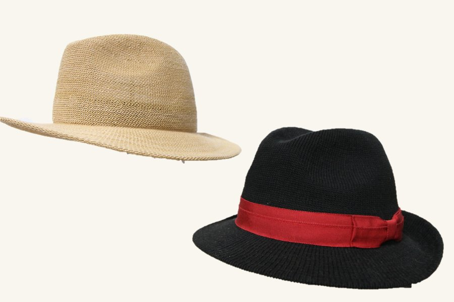
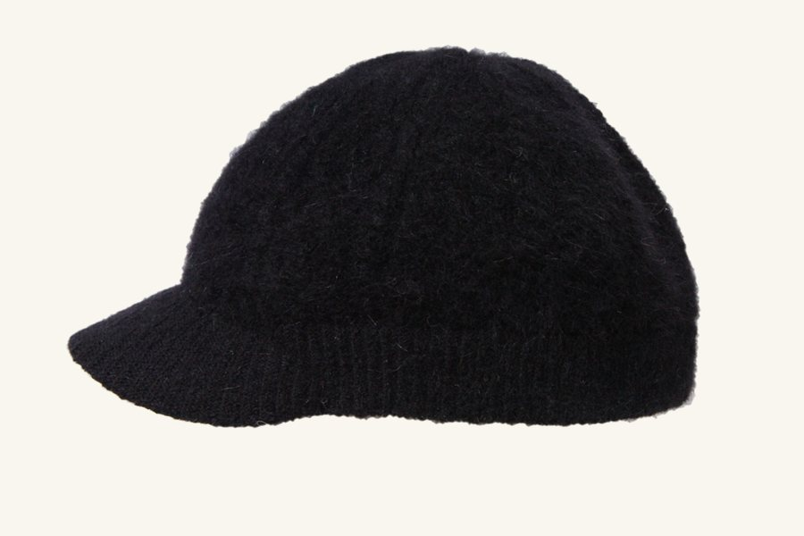
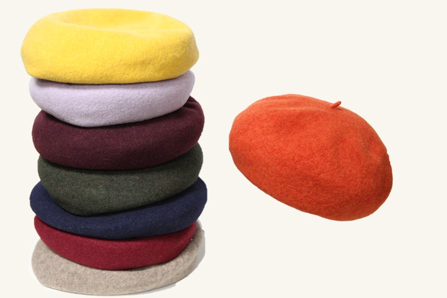
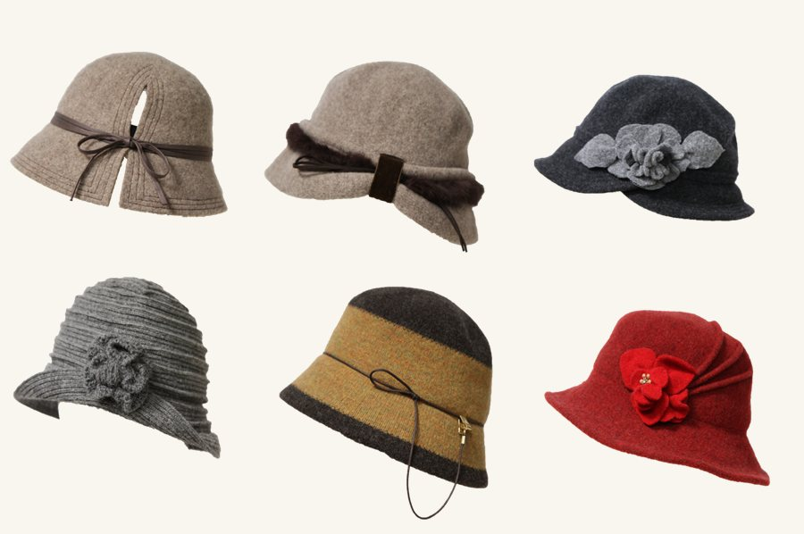
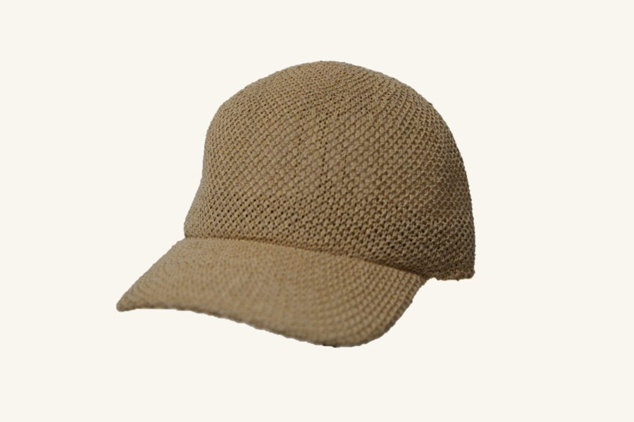
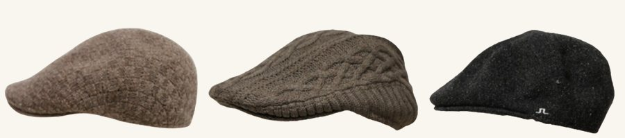
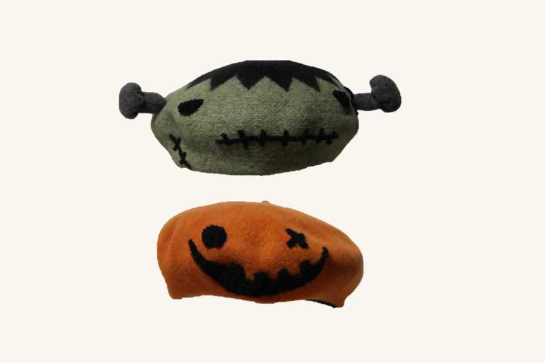

涵蓋 39 款產品資產之核心帽型講解，支援 14 個工作天自主打樣開發

精選天然亞麻於台灣打造。得益於先進熱定型技術，維持立體挺拔廓形，確保透氣與遮陽效果，具備優異形狀記憶力。

優雅與復古時尚兼具，頂級精梳棉編織而成。招牌熱定型加工維持微澎立體弧度與抗擠壓彈性，帶來親膚舒適體驗。

精選澳洲羊毛縮絨一體成型，俐落仿皮滾邊搭配手工縫合細節。具備保暖與透氣度，契合軍警、旅宿等制服配件標準。

專為女性優雅氣質打造的定型成型帽款。採用細緻麻棉混紡或紙編紗線，兼具俐落流暢的帽簷線條與遮陽效果，配戴輕盈且不易塌陷。

結合一體成型針織帽體與定型弧度帽簷技術。打破傳統裁片成衣感，具備高透氣性、抗壓不變形與服貼頭型的立體輪廓，支援高爾夫與高街潮流配件品牌。

經典英倫獵鴨帽型重塑，採用一體成型針織技術打造。特色熱定型加工維持扁平俐落的帽簷線條，服貼頭型不易變形，適合復古紳士風格或街頭混搭品牌。

為童裝、親子活動與品牌授權商品設計。嚴選無刺激親膚紗線，結合手工刺繡、造型耳朵或徽章加工，嚴格把關洗標與安全規範。